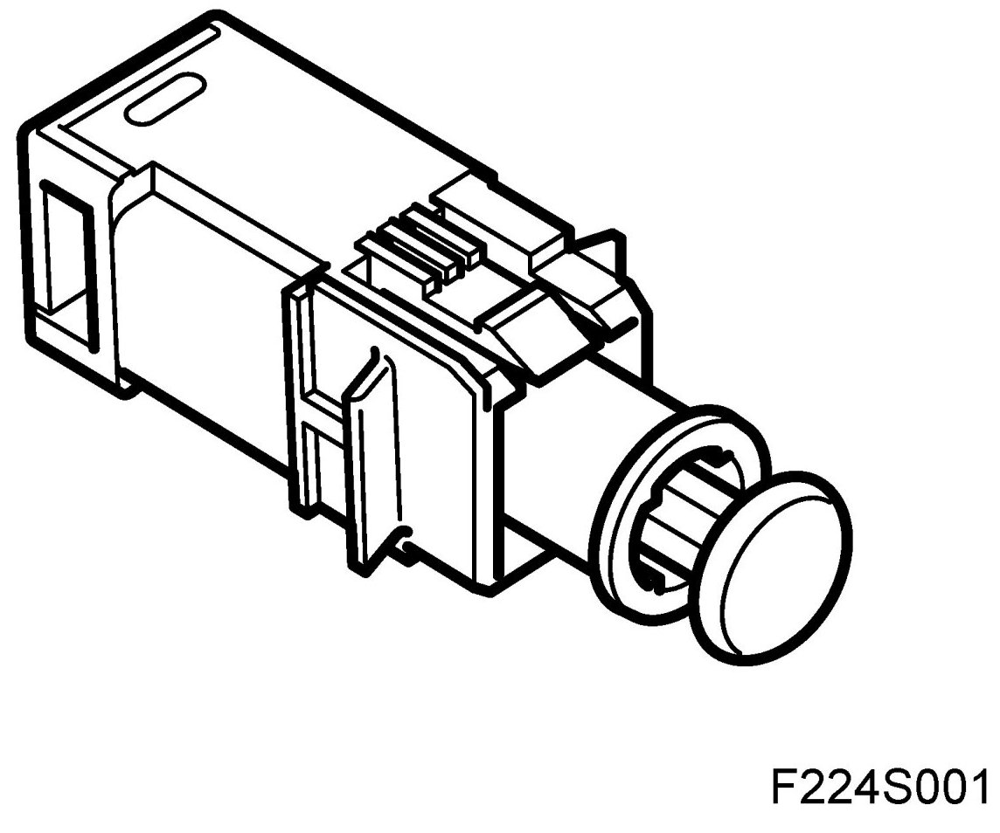

Operation CHARM
: Car repair manuals for everyone.
Home
>>
Saab
>>
2011
>>
9-3 FWD (9440) L4-2.0L Turbo
>>
Repair and Diagnosis
>>
Cruise Control
>>
Sensors and Switches - Cruise Control
>>
Clutch Switch
>>
Description and Operation
>>
Connector, Clutch, Cruise Control (133)
Connector, Clutch, Cruise Control (133)
Connector, Clutch, Cruise Control (133)
